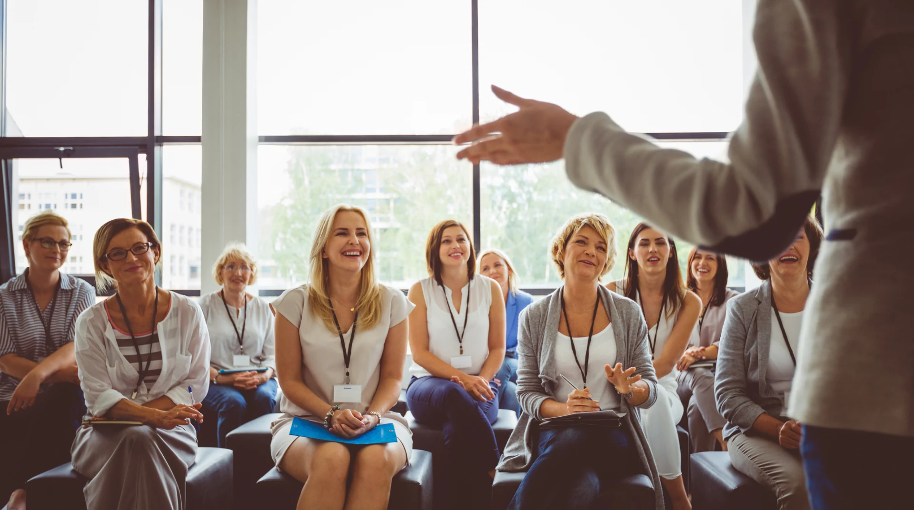

Pracownicy zdobywają aktualną wiedzę i praktyczne metody możliwe do zastosowania w edukacji dorosłych, doradztwie i pracy informacyjnej.
Kompetencje przyszłości w praktyce
Projekt „Edukacja bez granic”, realizowany przez Wojewódzki Urząd Pracy w Katowicach w ramach programu Erasmus+ i finansowany ze środków Unii Europejskiej, stał się impulsem do stworzenia nowoczesnej oferty szkoleniowej. Doświadczenia oraz dobre praktyki zdobyte podczas mobilności edukacyjnych zostały wykorzystane do opracowania praktycznych szkoleń, kursów online i materiałów edukacyjnych wspierających rozwój kompetencji osób dorosłych.

- Numer projektu
- 2025-1-PL01-KA122-ADU-000333553
- Beneficjent
- Wojewódzki Urząd Pracy w Katowicach
- Akcja
- KA122-ADU – projekt krótkoterminowy w sektorze Edukacja dorosłych
Program Erasmus+ i finansowanie Unii Europejskiej
Mobilność, któraprzekłada się nakonkretne działania
Rezultaty mobilności zostały przełożone na trwałe rozwiązania edukacyjne. Wiedza i dobre praktyki zdobyte podczas zagranicznych mobilności zostały poddane analizie, dostosowane do potrzeb regionalnego rynku pracy oraz specyfiki funkcjonowania publicznych służb zatrudnienia, a następnie wykorzystane do opracowania autorskich programów szkoleniowych, kursów online, scenariuszy zajęć, ćwiczeń, infografik i materiałów edukacyjnych. Takie podejście zapewnia trwałość rezultatów projektu oraz umożliwia ich wykorzystanie przez szerokie grono odbiorców także po zakończeniu jego realizacji.
Rozwiązania poznane podczas szkoleń są porządkowane, testowane i dostosowywane do potrzeb publicznych służb zatrudnienia oraz ich odbiorców.
Efektem są szkolenia, kursy i materiały, które pozwalają przekazywać zdobyte kompetencje kolejnym pracownikom, instytucjom i osobom dorosłym.
Najnowsze rezultaty projektu
Trzy programy rozwijane w obecnym etapie mobilności
Najnowszy projekt koncentruje się na kompetencjach potrzebnych do świadomego korzystania z informacji, skutecznego komunikowania się oraz projektowania angażującej edukacji dorosłych.
Media literacy, fake news i krytyczne myślenie
Program rozwija umiejętność oceny informacji, rozpoznawania manipulacji, weryfikowania źródeł oraz bezpiecznego poruszania się w środowisku cyfrowym. Uczestnicy poznają mechanizmy dezinformacji, zagrożenia związane z AI i deepfake oraz praktyczne narzędzia fact-checkingowe.
Rezultatem jest szkolenie warsztatowe, rozbudowany kurs online, realistyczne studia przypadków, checklisty i materiały wspierające samodzielną weryfikację informacji.
Skuteczna komunikacja i wystąpienia publiczne
Program wspiera budowanie jasnego i uporządkowanego przekazu, angażowanie odbiorców, pracę z głosem oraz lepsze przygotowanie wystąpień. Obejmuje komunikację w sytuacjach zawodowych, strukturę wypowiedzi, storytelling i świadome reagowanie na napięcie.
Uczestnicy ćwiczą prowadzenie rozmów, prezentowanie złożonych treści prostym językiem oraz dopasowanie sposobu komunikacji do różnych grup odbiorców.
Gamifikacja i game-based learning
Program pokazuje, jak wykorzystywać mechanizmy gier, pracę zadaniową, scenariusze i aktywne metody uczenia się do projektowania bardziej angażujących szkoleń. Szczególny nacisk położono na dobór metod do celu edukacyjnego, a nie na samą atrakcyjność formy.
Uczestnicy uczą się projektować ćwiczenia zwiększające motywację, współpracę i zaangażowanie bez upraszczania ważnych treści merytorycznych.
Główny rezultat obecnego projektu
Trzy programy są rozwijane jako spójna oferta szkoleniowa WUP Katowice. Mają służyć pracownikom instytucji rynku pracy, trenerom, doradcom oraz osobom dorosłym rozwijającym kompetencje potrzebne w pracy i codziennym funkcjonowaniu.
Jak działa projekt
Jak finansowanie europejskie przekłada się na ofertę dostępną w regionie
Każdy etap ma prowadzić do konkretnego rezultatu. Wiedza zdobyta przez uczestników projektu zostaje uporządkowana, przetestowana i przekazana dalej.
Program Erasmus+ i środki UE
Finansowanie umożliwia realizację projektów mobilności edukacyjnej, udział pracowników w specjalistycznych szkoleniach oraz rozwijanie współpracy międzynarodowej.
Doskonalenie pracowników
Uczestnicy poznają aktualne metody, narzędzia i rozwiązania stosowane w edukacji dorosłych, komunikacji, pracy z informacją oraz projektowaniu procesów uczenia się.
Adaptacja metod
Zdobyta wiedza jest analizowana i dostosowywana do realiów administracji publicznej, regionalnego rynku pracy oraz potrzeb pracowników i klientów instytucji.
Programy i materiały
Powstają własne scenariusze szkoleń, ćwiczenia, kursy internetowe, infografiki, checklisty i narzędzia możliwe do wykorzystania podczas dalszych działań edukacyjnych.
Szkolenia i upowszechnianie
Rezultaty wracają do regionu poprzez warsztaty, szkolenia wewnętrzne i zewnętrzne, materiały online oraz współpracę z instytucjami i kolejnymi grupami odbiorców.

Wiedza wykorzystana w praktycewcześniejsze projekty już rozwinęły ofertę szkoleniową WUP Katowice
Ciągłość projektów mobilnościowych
Doświadczenia z kolejnych projektów budują stałą ofertę szkoleniową
Rozwijanie kompetencji pracowników nie rozpoczęło się wraz z obecnym projektem. Wcześniejsze działania mobilnościowe zostały wykorzystane między innymi do przygotowania i prowadzenia szkoleń dotyczących sztucznej inteligencji oraz kompetencji społecznych i emocjonalnych.
Najważniejszym dowodem skuteczności projektu nie jest sam udział w szkoleniu zagranicznym, lecz to, czy zdobyta wiedza została przełożona na działania przydatne innym osobom. Dlatego programy są rozwijane dalej, aktualizowane i dostosowywane do kolejnych grup odbiorców.
- Sztuczna inteligencja w pracy i edukacjipraktyczne wykorzystywanie narzędzi AI, tworzenie materiałów, automatyzacja wybranych zadań i odpowiedzialne korzystanie z technologii
- Kompetencje społeczne i emocjonalnesamoświadomość, komunikacja, współpraca, regulowanie emocji oraz budowanie relacji w środowisku zawodowym
- Nowe programy obecnego projektumedia literacy, komunikacja i wystąpienia publiczne oraz gamifikacja i game-based learning
Dotychczasowe rezultaty
Szkolenia realizowane dzięki rozwijanym kompetencjom
Zdjęcia pokazują działania prowadzone już po zakończeniu poszczególnych etapów doskonalenia. To warsztaty, prezentacje i spotkania, podczas których wiedza zdobyta w projektach jest przekazywana kolejnym uczestnikom.
Sztuczna inteligencja w praktyce
Doświadczenia zdobyte w ramach wcześniejszego projektu zostały wykorzystane do przygotowania warsztatów poświęconych praktycznemu zastosowaniu AI w pracy, edukacji i tworzeniu treści. Szkolenia obejmują również ograniczenia modeli, bezpieczeństwo informacji oraz odpowiedzialność użytkownika.
Kompetencje społeczne i emocjonalne
Metody z zakresu SEL zostały dostosowane do potrzeb pracowników instytucji rynku pracy. Podczas zajęć uczestnicy pracują nad samoświadomością, komunikacją, współpracą, rozpoznawaniem emocji i budowaniem relacji w wymagających sytuacjach zawodowych.


{kind=link}
{kind=link}
{kind=link}
{kind=link}
{kind=link}
{kind=link}
{kind=link}
Oferta rozwijana etapami
Kolejne obszary odpowiadające na potrzeby współczesnej pracy
Portal jest podstawą stałej platformy edukacyjnej. Oprócz trzech najnowszych programów rozwijamy i porządkujemy również tematy wynikające z wcześniejszych projektów, doświadczeń szkoleniowych i potrzeb zgłaszanych przez odbiorców.

Technologie
Sztuczna inteligencja
Bezpieczne i praktyczne wykorzystywanie narzędzi AI w pracy, edukacji, tworzeniu materiałów oraz analizowaniu informacji. Program uwzględnia zarówno możliwości technologii, jak i jej ograniczenia.

Relacje
SEL
Samoświadomość, komunikacja, współpraca, rozpoznawanie emocji i budowanie relacji. Zajęcia wspierają pracowników w świadomym reagowaniu na trudne sytuacje zawodowe.

Bezpieczeństwo
Cyberbezpieczeństwo
Rozpoznawanie zagrożeń, ochrona danych, bezpieczne korzystanie z urządzeń i usług cyfrowych oraz właściwe reagowanie na phishing, podszywanie się i próby wyłudzenia.

Dobrostan
Mindfulness
Uważność, koncentracja, świadome zarządzanie uwagą i sposoby ograniczania przeciążenia w środowisku zawodowym. Program wspiera budowanie bardziej zrównoważonych nawyków pracy.

Kompetencje przyszłości
4C
Krytyczne myślenie, komunikacja, współpraca i kreatywność jako zestaw kompetencji wspierających rozwiązywanie problemów, uczenie się i funkcjonowanie w warunkach zmiany.

Rozwój zawodowy
Coaching i doradztwo
Narzędzia wspierające sprawczość, określanie celów, planowanie zmiany i podejmowanie decyzji zawodowych. Temat jest rozwijany z myślą o osobach pracujących z klientami instytucji rynku pracy.
Dla kogo
Oferta łączy rozwój pracowników z realnym wsparciem odbiorców
Programy powstają z myślą o osobach, które prowadzą działania edukacyjne, doradcze i informacyjne, a także o uczestnikach rozwijających kompetencje potrzebne w pracy i codziennym funkcjonowaniu.
Pracownicy instytucji rynku pracy
Osoby prowadzące doradztwo, szkolenia, spotkania informacyjne i działania wspierające rozwój zawodowy. Materiały pomagają im aktualizować wiedzę i wzbogacać własny warsztat pracy.
Publiczne służby zatrudnienia i partnerzy
Zespoły poszukujące praktycznych programów, narzędzi i materiałów możliwych do wykorzystania w pracy z klientami, podczas szkoleń wewnętrznych i działań upowszechniających.
Osoby dorosłe rozwijające kompetencje
Uczestnicy szkoleń i kursów, którzy chcą bezpieczniej poruszać się w świecie informacji, technologii i zmiany zawodowej oraz świadomiej podejmować decyzje.
Sposób pracy
Szkolenia oparte na działaniu, analizie i wymianie doświadczeń
Wiedza jest punktem wyjścia. Najważniejsze pozostają ćwiczenia, rozmowa, analiza rzeczywistych sytuacji i możliwość sprawdzenia narzędzi w praktyce.
Praktyczne ćwiczenia
Uczestnicy analizują sytuacje, rozwiązują zadania, porównują możliwe sposoby działania i testują narzędzia, które mogą później wykorzystać w swojej pracy.
Dzielenie się doświadczeniem
Szkolenia tworzą przestrzeń do rozmowy o realnych wyzwaniach, konfrontowania różnych perspektyw i wspólnego poszukiwania rozwiązań możliwych do zastosowania w instytucjach.
Treści dopasowane do odbiorców
Programy uwzględniają specyfikę administracji publicznej, instytucji rynku pracy i edukacji dorosłych. Przykłady oraz zadania są dobierane do rzeczywistych potrzeb uczestników.
Skorzystaj z rezultatów projektu
Przejdź do zapisów →Sprawdź kurs online, terminy szkoleń i formularze zapisów
Zapisy uruchamiamy po potwierdzeniu harmonogramu poszczególnych szkoleń. Kurs online i materiały można rozwijać oraz udostępniać kolejnym grupom w ramach działań upowszechniających.